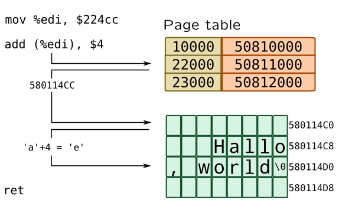
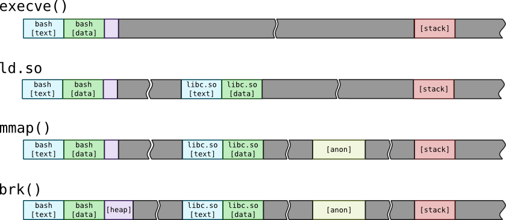
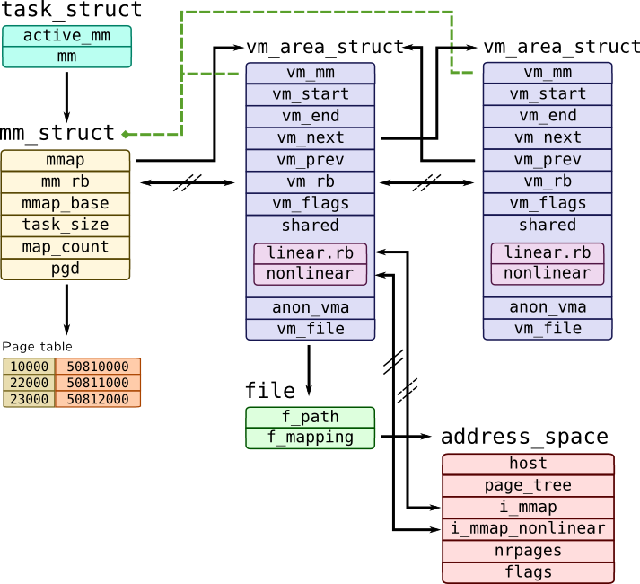
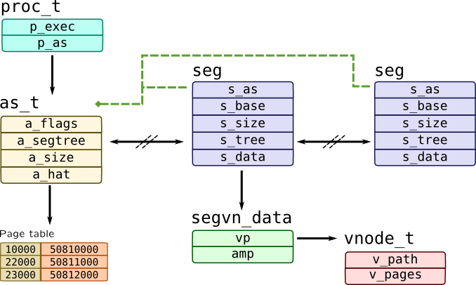
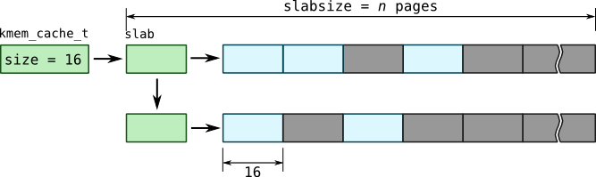

Virtual memory
Consider the following C program which will be translated into assembler:
char msg[] = "Hallo, world"; // mov %edi, $224cc msg[1] += 4; // add (%edi), $4When single instance of that program is running, it will work as expected, message will become "Hello, world". But what will happen if two instances of program will be run simultaneously? Since compiler have used absolute addressing, second program may have been overwritten data of first instance of a program, making it "Hillo, world!" (actually, before that, program loader should load original message "Hallo, world" back). So multiprocessing creates two problems: same addresses of different processes shouldn't point to same physical memory cell and processes should be disallowed to write to memory that doesn't belong to them. Virtual memory is an answer to that problems.
Modern virtual memory mechanisms are based on page addressing: all physical memory is divided to a pages of a small size (4 kb in x86). Processes are exist in a virtual address space where each subset of addresses, say [BASE;BASE+PAGESIZE), maps to a single page. List of such mappings is maintained as page table. Modern CPUs also provide support for huge pages (Linux) or large pages (Solaris) which may be megabytes or even gigabyte in size. Speaking of our previous example, kernel binary format loader will set up a virtual address space for our program, copying all data to a new locations in physical memory:

When second instance of a program will start, new process with separate address space will be created, thus making independent copy of process data, including "Hallo, world" message, but with same addresses. When process (actually its thread or task) is dispatched onto CPU, address of its page table is written to a special register (like CR3 on x86), so only it may access its data. All address translations are performed by Memory Management Unit in CPU and are transparent for it.
From the process point of view, pages are grouped into segments which constitute address space:

New address spaces are created as a result of execve() system call. When it is finished, new address space constitutes from four segments: text segment contains program code, data segment contains program data. Binary loader also creates two special segments: heap for dynamically allocated memory and stack for program stack. Process arguments and environment are also initially put onto stack. Than, kernel runs process interpreter ld.so, which actually a dynamic linker. That linker searches for libraries for a process such as standard C library libc.so and calls mmap() to load text and data sections of that libraries.
When you try to allocate memory using malloc(), standard C library may increase heap using brk() or sbrk() system call. Program may also use mmap() calls to map files into memory. If no file is passed to mmap() call, then it will create special memory segment called an anonymous memory. Such memory segment may be used for memory allocators, independent from main process heap.
You can check address space of a process with pmap program or by viewing /proc/PID/mapping file on Linux.
Let's for example see, how memory is dynamically allocated by calling malloc() with relatively large value. I used Python 2 range(10000) built-in which creates list with 10000 numbers.
SystemTap provides corresponding syscalls via tapset vm:
# stap -d $(which python) --ldd -e '
probe vm.brk, vm.mmap, vm.munmap {
printf("%8s %s/%d %p %d\n",
name, execname(), pid(), address, length);
print_ubacktrace();
}' -c 'python -c "range(10000)"'
Solaris doesn't have such tapset, but these operations are performed using as_map() and as_unmap() kernel functions:
# dtrace -qn '
as_map:entry, as_unmap:entry {
printf("%8s %s/%d %p %d\n",
probefunc, execname, pid, arg1, arg2);
ustack();
}'
# python -c "import time; range(10000); time.sleep(2)"
After running both of these scripts, you will see, that lot's of brk() calls are caused by builtin_range() function in Python.
Process address space is kept in mm_struct in Linux and in as_t structure in Solaris:

Each memory segment is represented by instance of vm_area_struct structure which has two addresses: vm_start which points to the beginning of a segment and vm_end which points to the end of the segment. Kernel maintains two lists of segments: linear double-linked list of segments (sorted by their addresses) starting with mmap pointer in mm_struct with vm_next and vm_prev pointers, another list is a red-black tree built with mm_rb as root and vm_rb as node.
Segments may be mapped files, so they have non-NULL value of vm_file pointing to a file. Each file has an address_space which contains all pages of a file in a page_tree in a address_space object. This object also references host inode of a file and all mappings corresponding to that file through linear and non-linear lists, thus making all mappings of a file shared. Another option for mapping is anonymous memory -- its data is kept in anon_vma structure. Every segment has a vm_mm pointer which refers mm_struct to which it belongs.
mm_struct alone contains other useful information, such as base addresses of entire address space mmap_base, addresses of a stack, heap, data and text segments, etc. Linux also caches memory statistics for a process in rss_stat field of mm_struct which can be pretty-printed with proc_mem* functions in SystemTap:
# stap -e '
probe vm.brk, vm.mmap {
printf("%8s %d %s\n", name, pid(), proc_mem_string());
}' -c 'python -c "range(10000)"'
In Solaris as_t structure accessible through p_as field of process and keeps all segments in AVL tree where a_segtree is a root node and s_tree is a nodes embedded to a segment:

Each segment has backward link to address space s_as, s_base as base address of a segment and s_size as its size. Solaris uses so-called segment drivers to distinguish one type of a segment to another, so it provides table of operations through s_ops field and private data through s_data field. One of the segment drivers is segvn driver which handles mmapped segments of memory both from files and anonymous, which keep their data in segvn_data structure which holds two pointers: vp to file's vnode and amp for a map of anonymous memory.
Some memory will be consumed by a process indirectly. For example, when application transfers a packet through the network or writes data to a file on /tmp filesystem, data is buffered by Kernel, but that memory is not mapped to a process. To do so, Kernel uses various in-kernel memory allocators and maintains kernel address space.
Page fault
As we mentioned before, when program accesses memory, memory management unit takes address, finds an entry in a page table and gets physical address. That entry, however, may not exist -- in that case CPU will raise an exception called a page fault. There are three types of page faults that may happen:
- Minor page fault occurs when page table entry should exist, but corresponding page wasn't allocated or page table entry wasn't created. For example, Linux and Solaris do not allocate mmapped pages immediately, but wait until first page access which causes minor page faults.
- Major page fault requires reading from disk. It may be caused by accessing memory-mapped file or when process memory was paged-out onto disk swap.
-
Invalid page fault occur when application access memory at invalid address or when segment permissions forbid such access (for example writing into text segment, which is usually disallowed). In this case operating system may raise
SIGSEGVsignal. A special case of invalid page faults is copy-on-write fault which happens when forked process tries to write to a parent's memory. In this case, OS copies page and sets up a new mapping for forked process.
Page faults are considered harmful because they interrupt normal process execution, so there are various system calls such as mlock(), madvise() which allow to flag memory areas to reduce memory faults. I.e. mlock() should guarantee page allocation, so minor fault won't occur for that memory area. If page faults occurs in a kernel address space, it will lead to kernel oops or panic.
You can trace page faults in Linux by attaching to vm.pagefault.return probe. It has fault_type variable which is a bitmask of a fault type. RedHat-like kernels also have mm_anon_* and mm_filemap_* probes. Page faults is also presented to a perf subsystem. In Solaris all virtual memory events including page faults are available in vminfo provider:
| Type | DTrace | SystemTap |
| Any |
vminfo::as_fault |
perf.sw.page_faults |
| Minor |
perf.sw.page_faults_min |
|
| Major |
vminfo:::maj_fault usually followed by vminfo::pgin |
perf.sw.page_faults_min |
| Invalid |
vminfo:::cow_fault for copy-on-write faults
vminfo:::prot_fault for invalid permissions or address |
See notes below |
Note
Linux doesn't have distinct probe for invalid page fault -- these situations are handled by architecture-specific function do_page_fault(). They are handled by family of bad_area*() functions on x86 architecture, so you can attach to them:
# stap -e '
probe kernel.function("bad_area*") {
printf("%s pid: %d error_code: %d addr: %p\n",
probefunc(), pid(), $error_code, $address);
} '
Note
By default perf probe fires after multiple events, because it is sampler. To alter that behaviour, you should use .sample(1) which will fire on any event, but that requires to pass perf probes in raw form, i.e.:
perf.type(1).config(2).sample(1)You can check actual values for type and config in
/usr/share/systemtap/linux/perf.stp tapset. See also: perf syntax in Profiling section of this book.
Page fault is handled by as_fault() function in Solaris:
faultcode_t as_fault(struct hat *hat, struct as *as,
caddr_t addr, size_t size,
enum fault_type type, enum seg_rw rw);
This function calls as_segat to determine segment to which fault address belongs, providing struct seg* as a return value. When no segment may be found due to invalid fault, it returns NULL.
Let's write simple tracer for these two functions. It also prints amp address and path of vnode for segvn driver:
#!/usr/sbin/dtrace -qCs
/**
* pagefault.d
*
* Traces page faults which are handled by as_fault()
*
* Tested on Solaris 11
*/
string fault_type[4];
string seg_rw_type[6];
string prot[8];
#define DUMP_AS_FAULT() \
printf("as_fault pid: %d as: %p\n", pid, self->as); \
printf("\taddr: %p size: %d flags: %s|%s \n", \
self->addr, self->size, \
fault_type[self->pf_type], \
seg_rw_type[self->pf_rw] \
)
#define PROT(p) prot[(p) & 0x7], \
((p) & 0x8) ? "u" : "-"
#define VNODE_NAME(vp) (vp) \
? ((vp)->v_path) \
? stringof((vp)->v_path) \
: "???" \
: "[ anon ]"
#define DUMP_SEG_VN(seg, seg_vn) \
printf("\t[%p:%p] %s%s\n\tvn: %s\n\tamp: %p:%d \n", \
(seg)->s_base, (seg)->s_base + (seg)->s_size, \
PROT((seg_vn)->prot), VNODE_NAME((seg_vn)->vp), \
(seg_vn)->amp, (seg_vn)->anon_index \
)
#define IS_SEG_VN(s) (((struct seg*) s)->s_ops == &`segvn_ops)
BEGIN {
/* See vm/seg_enum.h */
fault_type[0] = "F_INVAL"; fault_type[1] = "F_PROT";
fault_type[2] = "F_SOFTLOCK"; fault_type[3] = "F_SOFTUNLOCK";
seg_rw_type[0] = "S_OTHER"; seg_rw_type[1] = "S_READ";
seg_rw_type[2] = "S_WRITE"; seg_rw_type[3] = "S_EXEC";
seg_rw_type[4] = "S_CREATE"; seg_rw_type[5] = "S_READ_NOCOW";
prot[0] = "---"; prot[1] = "r--";
prot[2] = "-w-"; prot[3] = "rw-";
prot[4] = "--x"; prot[5] = "r-x";
prot[6] = "-wx"; prot[7] = "rwx";
}
fbt::as_fault:entry {
self->in_fault = 1;
self->as = args[1];
self->addr = args[2];
self->size = args[3];
self->pf_type = args[4];
self->pf_rw = args[5];
}
fbt::as_fault:return
{
self->in_fault = 0;
}
fbt::as_segat:return
/self->in_fault && arg1 == 0/
{
DUMP_AS_FAULT();
}
fbt::as_segat:return
/self->in_fault && arg1 != 0 && IS_SEG_VN(arg1)/
{
this->seg = (struct seg*) arg1;
this->seg_vn = (segvn_data_t*) this->seg->s_data;
DUMP_AS_FAULT();
DUMP_SEG_VN(this->seg, this->seg_vn);
}
as_fault pid: 3408 as: 30003d2dd00
addr: d2000 size: 1 flags: F_PROT|S_WRITE
[c0000:d4000] rwxu
vn: /usr/bin/bash
amp: 30008ae4f78:0
It was most likely a data segment of a /usr/bin/bash binary (because it has rights rwxu), while type of the fault is F_PROT which means invalid access right which makes it copy-on-write fault.
If you run a script for a process which allocates and initializes large amount of memory, you'll see lots of minor faults (identifiable by F_INVAL) with addresses which are go sequentially:
as_fault pid: 987 as: ffffc10008fc6110
addr: 81f8000 size: 1 flags: F_INVAL|S_WRITE
[8062000:a782000] rw-u
as_fault pid: 987 as: ffffc10008fc6110
addr: 81f9000 size: 1 flags: F_INVAL|S_WRITE
[8062000:a782000] rw-u
as_fault pid: 987 as: ffffc10008fc6110
addr: 81fa000 size: 1 flags: F_INVAL|S_WRITE
[8062000:a782000] rw-u
Like we mentioned before, when application allocates memory, pages are not necessarily created. So when process touches that memory first time, page fault occurs and actual page allocation is performed.
Similarly, all pagefaults are handled by handle_mm_fault() function in Linux:
int handle_mm_fault(struct mm_struct *mm,
struct vm_area_struct *vma,
unsigned long address, unsigned int flags);
SystemTap provides a wrapper for it: vm.pagefault which we will use to write pagefault tracer script for Linux:
#!/usr/bin/stap
/**
* pagefault.stp
*
* Traces page faults handled by handle_mm_fault()
*
* Tested on Linux 3.10 (CentOS 7)
*/
global fault_flags;
global vma_flags;
probe begin {
/* See include/linux/mm.h */
fault_flags[0] = "WRITE"; fault_flags[1] = "NONLINEAR";
fault_flags[2] = "MKWRITE"; fault_flags[3] = "ALLOW_RETRY";
fault_flags[4] = "RETRY_NOWAIT"; fault_flags[5] = "KILLABLE";
vma_flags[0] = "VM_GROWSDOWN"; vma_flags[2] = "VM_PFNMAP";
vma_flags[3] = "VM_DENYWRITE"; vma_flags[5] = "VM_LOCKED";
vma_flags[6] = "VM_IO"; vma_flags[7] = "VM_SEQ_READ";
vma_flags[8] = "VM_RAND_READ"; vma_flags[9] = "VM_DONTCOPY";
vma_flags[10] = "VM_DONTEXPAND"; vma_flags[12] = "VM_ACCOUNT";
vma_flags[13] = "VM_NORESERVE"; vma_flags[14] = "VM_HUGETLB";
vma_flags[15] = "VM_NONLINEAR"; vma_flags[16] = "VM_ARCH_1";
vma_flags[18] = "VM_DONTDUMP"; vma_flags[20] = "VM_MIXEDMAP";
vma_flags[21] = "VM_HUGEPAGE"; vma_flags[22] = "VM_NOHUGEPAGE";
}
function prot_str:string(prot: long) {
return sprintf("%s%s%s%s",
(prot & 0x1) ? "r" : "-",
(prot & 0x2) ? "w" : "-",
(prot & 0x4) ? "x" : "-",
(prot & 0x8) ? "s" : "-");
}
function vma_flags_str:string(flags: long) {
prot = flags & 0xf;
mprot = (flags >> 4) & 0xf;
flags = flags >> 8;
for(i = 0; i < 23; ++i) {
if(flags & 1) {
str = sprintf("%s|%s", str, vma_flags[i]);
}
flags >>= 1;
}
return sprintf("prot: %s may: %s flags: %s",
prot_str(prot), prot_str(mprot),
substr(str, 1, strlen(str) - 1));
}
function fault_flags_str:string(flags: long) {
for(i = 0; i < 6; ++i) {
if(flags & 1) {
str = sprintf("%s|%s", str, fault_flags[i]);
}
flags >>= 1;
}
/* Cut first pipe sign ('|') */
return substr(str, 1, strlen(str) - 1);
}
function vm_fault_str(fault_type: long) {
if(vm_fault_contains(fault_type, VM_FAULT_OOM))
return "OOM";
else if(vm_fault_contains(fault_type, VM_FAULT_SIGBUS))
return "SIGBUS";
else if(vm_fault_contains(fault_type, VM_FAULT_MINOR))
return "MINOR";
else if(vm_fault_contains(fault_type, VM_FAULT_MAJOR))
return "MAJOR";
else if(vm_fault_contains(fault_type, VM_FAULT_NOPAGE))
return "NOPAGE";
else if(vm_fault_contains(fault_type, VM_FAULT_LOCKED))
return "LOCKED";
else if(vm_fault_contains(fault_type, VM_FAULT_ERROR))
return "ERROR";
return "???";
}
probe vm.pagefault {
printf("vm.pagefault pid: %d mm: %p\n", pid(), $mm);
printf("\taddr: %p flags: %s\n", $address, fault_flags_str($flags));
printf("\tVMA [%p:%p]\n", $vma->vm_start, $vma->vm_end);
printf("\t%s\n", vma_flags_str($vma->vm_flags));
printf("\tamp: %p\n", $vma->anon_vma)
if($vma->vm_file != 0)
printf("\tfile: %s\n", d_name($vma->vm_file->f_path->dentry))
}
probe vm.pagefault.return {
printf("\t => pid: %d pf: %s\n", pid(), vm_fault_str(fault_type));
}
vm.pagefault pid: 1247 mm: 0xdf8bcc80
addr: 0xb7703000 flags: WRITE
VMA [0xb7703000:0xb7709000]
prot: rw-- may: rwx- flags: VM_ACCOUNT
amp: 0xdc62ca54
=> pid: 1247 pf: MINOR
Warning
vma_flags are not stable and change from version to version. This script contains values according to CentOS 7. Check include/linux/mm.h for details.
Kernel allocator
Virtual memory is distributed between applications and kernel by a subsystem which called kernel allocator. It may be used both for applications and for internal kernel buffers such as ethernet packets, block input-output buffers, etc.
Lower layer of the kernel allocator is a page allocator. It maintains lists of free pages which are immediately available to consumers, cache pages which are cached filesystem data and may be easily evicted and used pages that has to be reclaimed thus being writing on disk swap device. Page allocation is performed by page_create_va() function in Solaris which provides page-get and page-get-page static probes:
# dtrace -qn '
page-get* {
printf("PAGE lgrp: %p mnode: %d bin: %x flags: %x\n",
arg0, arg1, arg2, arg3);
}'
Warning
Solaris 11.1 introduced new allocator infrastructure called VM2. Information about it is not publicly available, so it is out of scope of our book.
Linux page allocator interface consists of alloc_pages*() family of functions and __get_free_pages() helper. They have mm_page_alloc tracepoint which allows us to trace it:
# stap -e '
probe kernel.trace("mm_page_alloc") {
printf("PAGE %p order: %x flags: %x migrate: %d\n",
$page, $order, $gfp_flags, $migratetype);
}'
For most kernel objects granularity of a single page (4 or 8 kilobytes usually) is too high, because most structures have varying size. On the other hand, implementing a classical heap allocator is not very effective considering the fact, that kernel performs many allocations for an object of same size. To solve that problem, a SLAB allocator (which we sometimes will refer to as kmem allocator) was implemented in Solaris. SLAB allocator takes one or more pages, splits it into a buffers of a smaller sizes as shown on picture:

Modern SLAB allocators may have various enhancements like per-cpu slabs, SLUB allocator in Linux. Moreover, cache object is not necessarily created in SLAB allocators -- objects of generic sizes may be allocated through function like kmalloc() in Linux or kmem_alloc in Solaris which will pick cache based on a size, such as size-32 cache in Linux or kmem_magazine_32 in Solaris. You can check overall SLAB statistics with /proc/slabinfo file in Linux, ::kmastat mdb command in Solaris or by using KStat: kstat -m unix -c kmem_cache.
Here are list of the probes related to kernel allocator:
| Object | Action | DTrace | SystemTap |
| Block of an unspecified size | alloc |
fbt::kmem_alloc:entry and fbt::kmem_zalloc:entry
|
vm.kmalloc and vm.kmalloc_node
|
| Block of an unspecified size | free |
fbt::kmem_free:entry
|
vm.kfree
|
| Block from pre-defined cache | alloc |
fbt::kmem_cache_alloc:entry
|
vm.kmem_cache_alloc and
vm.kmem_cache_alloc_node
Same params as vm.kmalloc |
| Block from pre-defined cache | free |
fbt::kmem_cache_free:entry
|
vm.kmem_cache_free and
Same params as vm.kfree |
Note that SystemTap probes are based on a tracepoints and provided by vm tapset.
On the other hand, when kernel needs to perform large allocations which are performed rarely, different subsystems are used: vmalloc in Linux, or vmem in Solaris (which is used by kmem SLAB allocator). Solaris also have segment drivers such as segkmem, segkpm, etc.